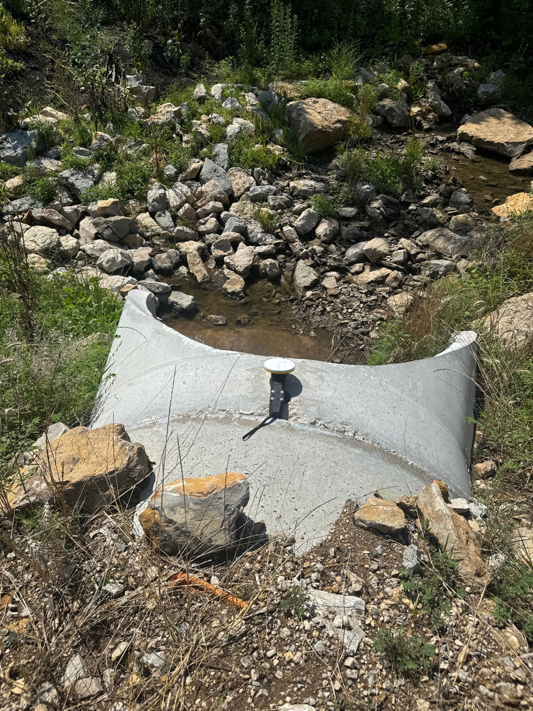

Shawnee Mission Park Culvert Inventory
Your cover photo will appear here
images/TrimbleUnit.jpg

One of my main projects during my JCPRD internship was building a brand-new, digital culvert inventory for our park properties, starting with Shawnee Mission Park. Before this, the district’s only records were over 10 years old in the form of a satellite image with vague, outdated points that weren’t precise enough for the maintenance crews to actually use.
To fix that, I took a Trimble GPS unit out into the field to collect accurate, high-precision coordinates from scratch. The final map brought everything up to date by verifying old structures and capturing dozens of newly installed culverts. Now, the operations team has a reliable, spatial inventory they can rely on for day-to-day park maintenance and work orders.